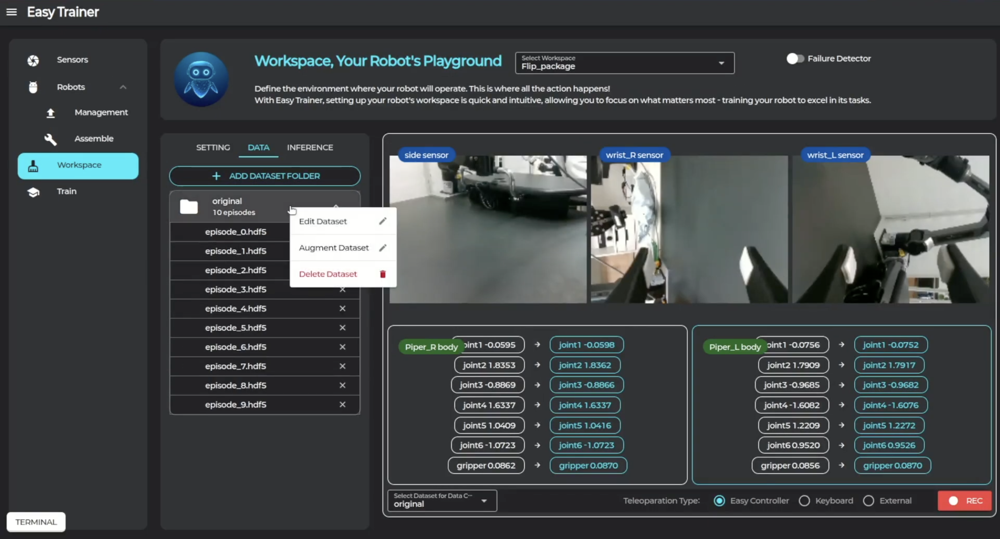
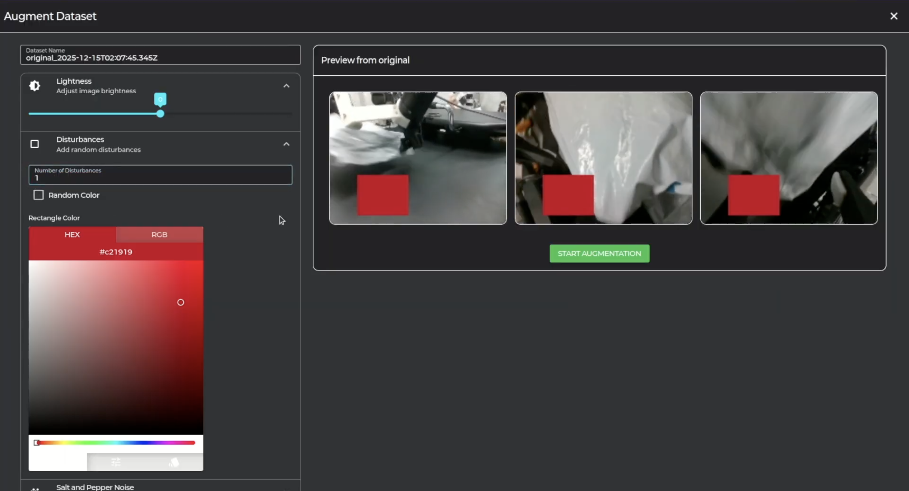
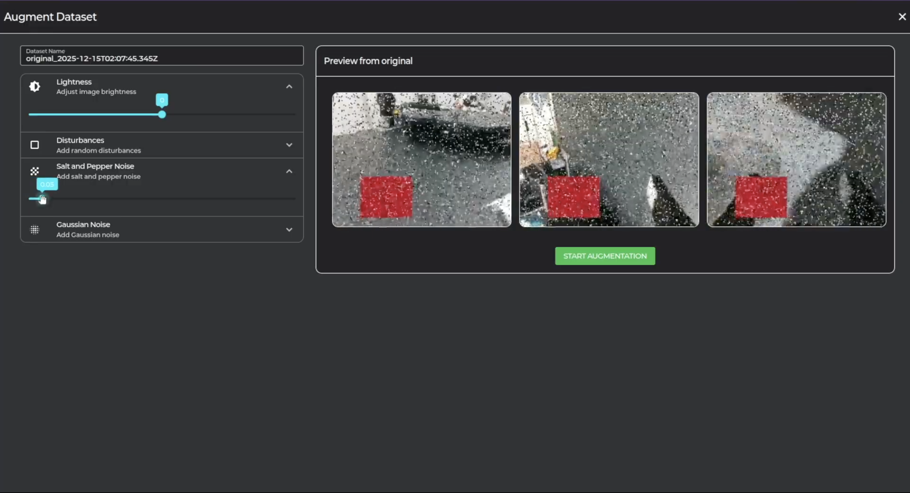

9 Data Augmentation
데이터 증강을 통해 학습 데이터의 다양성을 높이는 방법을 안내합니다.
📊 데이터 증강이란?
증강의 목적
다양한 환경에 강건하게 학습을 시키기 위해, 수집한 데이터를 조작하여 증강합니다.
🎨 증강 방법
-
1. 증강 시작

Workspace 탭 → Data 탭에서 데이터 폴더를 우클릭한 후 "Augment Dataset"을 클릭합니다.
증강 기법
💡 Lightness (밝기 조절)
이미지의 밝기를 단순히 조절하여 다양한 조명 환경을 시뮬레이션합니다.

🔲 Disturbances (방해 요소)
이미지에 지정한 색상의 사각형을 추가하여 방해 요소를 학습시킵니다.
⚪⚫ Salt and Pepper (노이즈)
이미지에 랜덤하게 흰 픽셀과 검은 픽셀을 추가하여 노이즈에 강건하게 만듭니다.
🌫️ Gaussian Noise (가우시안 노이즈)
이미지에 가우시안 노이즈를 추가하여 센서 노이즈를 시뮬레이션합니다.

💡 유용한 팁
모든 증강 기법을 적용하기보다는, 실제 작업 환경에 맞는 증강 기법을 선택적으로 사용하세요.